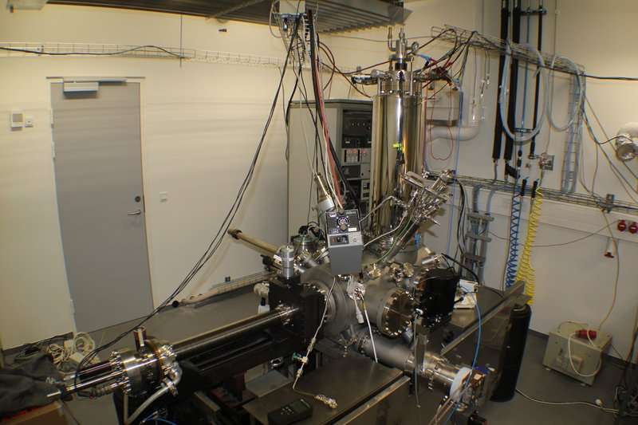
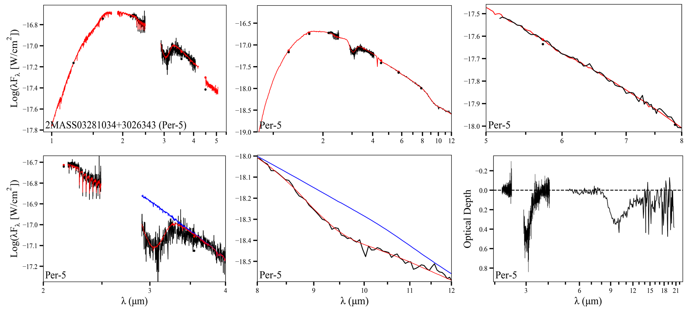
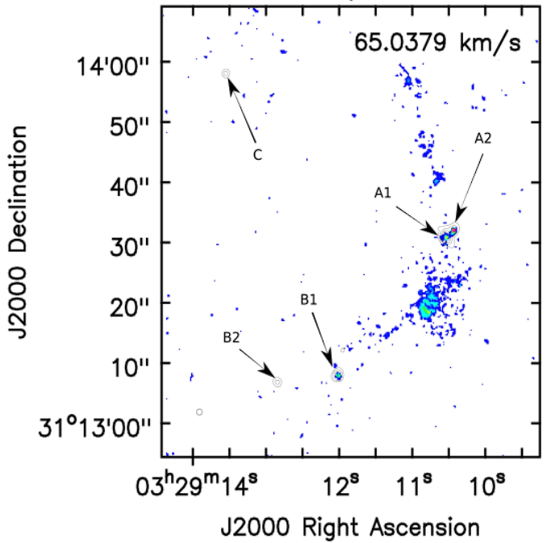

Current Research
Elemental Depletion in Inner Protoplanetary Disks
Previous Research
Elemental Depletion in DR Tau
As my M.Sc. thesis project, I investigated parameters of a physical-chemical model created in the photoionization code Cloudy (v23.01). This model predicted elemental abundances originating from the innermost regions of protoplanetary disks, and I compared the model results to those observed in the T Tauri disk DR Tau.
Mentor: Dr. Melissa McClure, Assistant Professor, Leiden University, Leiden, NL
Hot HCN and C2H2 Gas in a Hot Corino Binary
As part of my first-year research project in my M.Sc., I reduced iShell infrared data...
Mentor: Dr. Alexander Tielens, Professor of Physics & Chemistry, Leiden University, Leiden, NL
Co-mentor: Dr. Adwin Boogert, Associate Astronomer, Institute for Astronomy, University of Hawai'i at Manoa, Honolulu, HI, USA
Co-mentor: Dr. Jialu Li, Post-Doctoral Associate, University of Maryland, MD, USA
Molecular Tracers of CB68 Outflow
I studied complex organic molecules and gas-grain chemistry of a Class 0 protostar in the Bok globule CB68, observed as part of ALMA Large Program FAUST. In particular, I modeled the collimated bipolar molecular outflow using different molecular tracers, such as CS, CCH, and CH2O. I worked for 5 months at the National Radio Astronomy Observatory (NRAO) location in Charlottesville, VA, as well as had correspondence with the Socorro, NM location.
Mentor (remote): Dr. Brian Svoboda, Assistant Scientist, NRAO, Socorro, NM, USA
Mentor (on-site): Dr. Adele Plunkett, Assistant Scientist, NRAO, Charlottesville, VA, USA
CO2 Ice Clusters on HOPG
I joined the Surface Dynamics Group at Aarhus University for three months to take part in experiments involving CO2 deposited at 12 K onto highly-oriented pyrolytic graphite (HOPG), which then freezes into nanometer-thick ice clusters. Using low-temperature scanning tunneling microscopy (LT-STM), we scanned these ice clusters after annealing the sample to different temperatures <75 K. The aim of this project was to compare the structures of the CO2 across various temperatures, which simulates the process of CO2 ice formation and evolution in the interstellar medium. Data analysis and further experiments are in-progress, and the results are to be submitted to Nature Astronomy.
Mentor: Dr. Liv Hornekær, Professor of Physics & Astronomy, Aarhus University, Aarhus, Denmark

Ice Formation and Grain Growth in Perseus and Serpens
Much about the transition between dense and diffuse cloud regions in the interstellar medium remains unclear; however, ice formation and dust coagulation play a vital role. I examined the 3.0 µm water ice feature and 9.7 µm silicate dust feature versus the continuum extinction of 49 background stars observed toward the Perseus and Serpens Molecular Clouds in order to probe interstellar grain behavior across dense and diffuse cloud regions. I began working on the IR spectral data during one summer, and I continued this research the following year by improving the spectral fits, comparing correlations between absorption features and continuum extinction, and investigating each star’s local environment for influence from young stellar objects. My research yielded distinct differences between dense and diffuse regions that will add to the body of knowledge about the environment around young stars. My first-author paper on the results, M.C.L. Madden et al. 2022 ApJ 930 2, has been published in The Astrophysical Journal as of April 28, 2022.
Mentor: Dr. Adwin Boogert, Associate Astronomer, Institute for Astronomy, University of Hawai'i, Honolulu, HI, USA

CH3OH Transitions Toward NGC 1333 IRAS 4B1
The aim of this 10-week project was to understand how the physical conditions of the pre-stellar phase, in which ices form on interstellar dust grains, affect the chemistry of the protostar and its subsequent protoplanetary disk and planets. In order to do so, the species liberated from the ices must be investigated. I studied ten CH3OH transitions, ranging 24.9 – 26.4 GHz, observed with the Very Large Array toward the hot corino NGC 1333 IRAS 4B1. Hot corinos are hot (>100 K), small (<100 AU), low-mass protostars with high abundances of complex organic molecules in their inner envelopes, and only a few have been identified today. I produced a rotation diagram of the CH3OH transitions, from which I determined the excitation temperature and column density of the gas. I presented the results in a poster at the American Astronomical Society 235th Meeting in January 2020.
Mentor: Dr. Brian Svoboda, Jansky Fellow of the NRAO, Socorro, NM, USA
